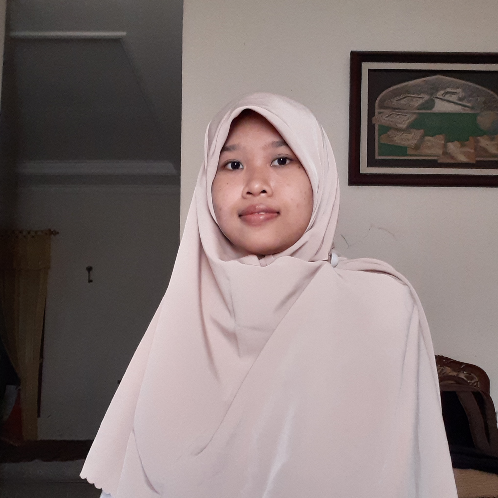

TENTANG SAYA

Saya, Namira Nur Damayanti, Lahir di Surabaya, Indonesia. Sedang menempuh pendidikan Teknik Mekatronika di Universitas Trunojoyo Madura. Saat ini mengikuti pelatihan dasar-dasar pemromgaman web yang diselenggarakan oleh Dicoding Indonesia, senang membaca buku dan bersepeda di waktu senggang. Pengalaman yang tak terlupakan yaitu ketika melakukan travelling ke Negara Singapura, di sana melihat patung Merlion. Di masa depan ingin menjadi Pegawai dan Ibu yang handal, ingin dikenal sebagai perempuan yang ramah dan ringan tangan. Keep in touch:
123namirand@gmail.com
+62-81232010597